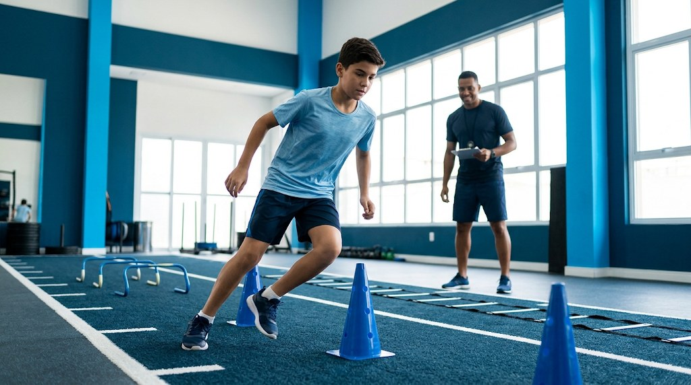

PKZ 7 a 15 anos
Treinamento complexo para jovens atletas
Preparação física de alto rendimento para crianças e adolescentes, com foco em performance esportiva, coordenação e prevenção de lesões — e acompanhamento próximo dos pais e responsáveis.
- Avaliações físicas com 16 testes
- Acompanhamento da evolução por pais e responsáveis
- Treino adaptado à modalidade de cada atleta